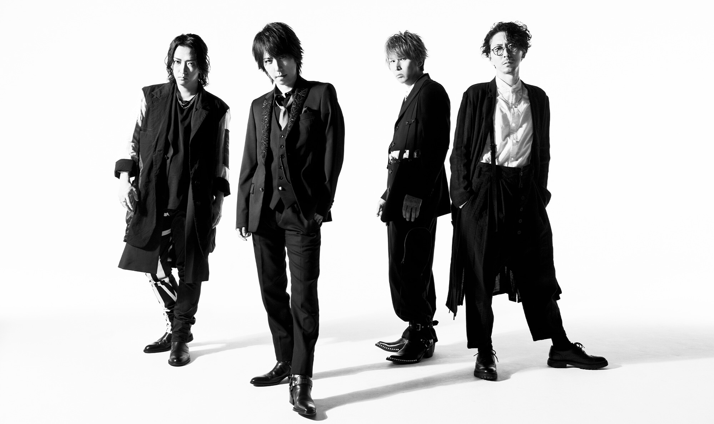
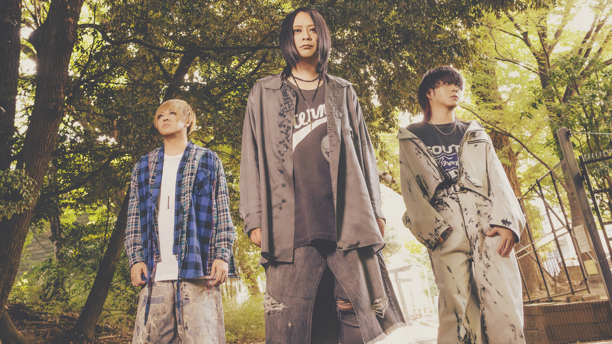
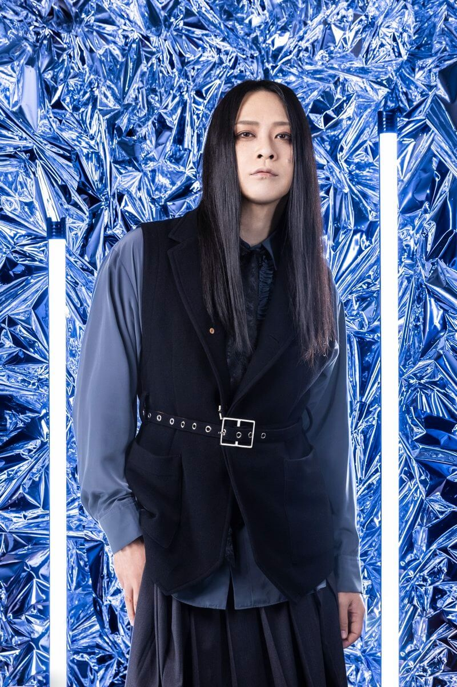
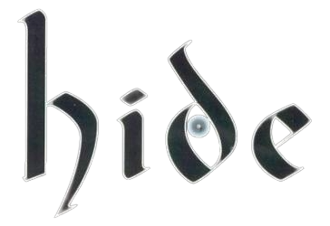
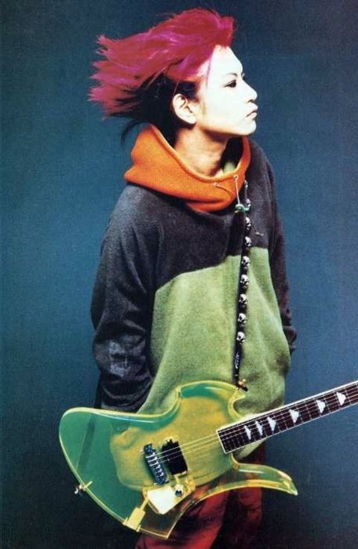
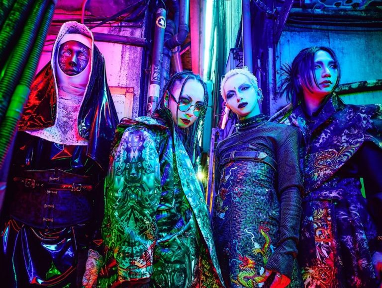
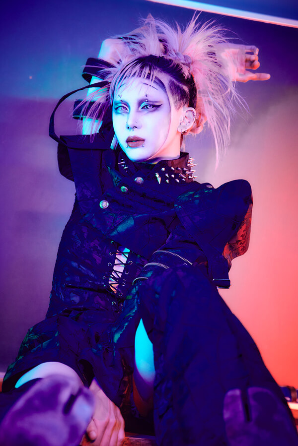
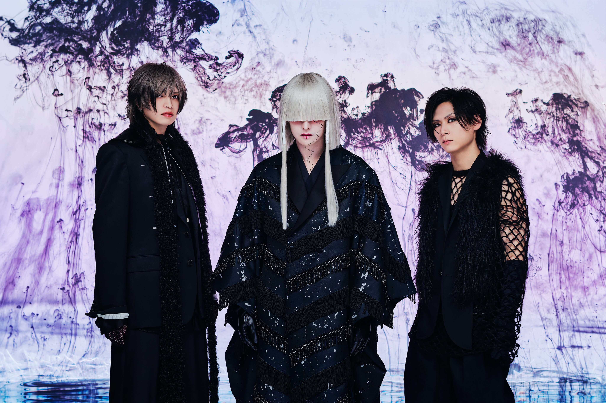
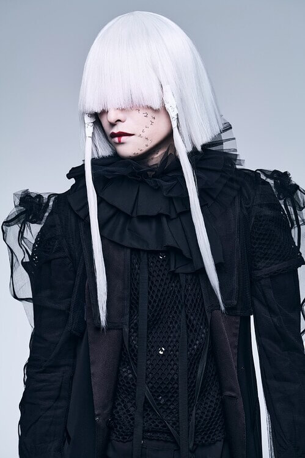

Aqui uma pequena bio

SID (シド) é uma renomada banda composta por Mao (vocalista), Shinji (guitarrista), Aki (baterista) e Yūya (baixista). Formada em 2003, a banda é conhecida por produzir músicas tema de animes, como Fullmetal Alchemist, Bleach, Kuroshitsuji, Magi, entre outros.
HONMEI
Mao
vocalista + texto

MUCC (ムック), formada em 1997, lançaram seu primeiro álbum de estúdio em 2001. A banda também é conhecida como 69, pois esse números podem ser pronunciados como "mu" e "ku" em japonês, respectivamente.
HONMEI
Tatsurou

vocalista + texto

Hide foi um musicista ex-integrante da conhecida por ser a fundadora do visuai kei no Japão: X Japan. Contribuiu com muitas bandas, além de ter uma carreira solo. Infelizmente faleceu em 1998.
Hide

guitarrista + texto

Kizu (キズ) é uma banda formada em 2017 por Lime (vocalista), Reiki (guitarrista), Yue (baixista) e Kyonosuke (bayerista). Em 2022 ocuparam o terceiro lugar no ranking de artista visual kei da JRock News.
HONMEI
Kyonosuke

baterista + texto


-Shintenchi Kaibyaku Shudan- Zigzag (-真天地開闢集団-ジグザグ), O conceito da banda é "estender a mão amiga aos tolos", enquanto seus shows são chamados de "purificações" e seus fãs de "adoradores". Seus membros são Mikoto (vocal e guitarra), Ryūya (baixo) e Kagemaru (bateria).
HONMEI
Mikoto

vocalista + texto
SOCIALS
Para interagir comigo e conversarmos sobre VK até o cu fazer bico, me siga no X/Twitter